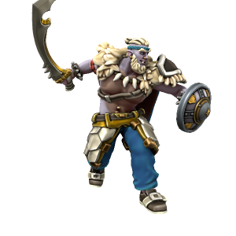

Rurik Waxwing

Leaves from the vine,
Falling so slow,
Brave soldier boy,
Comes marching home...
Son of the fearsome Captain Platinumfist, Rurik Waxwing was a bright young upstart already making a name for himself as a fearsome sellsword. He rose through the ranks at unprecidented speed; helped along by his proud Father's fearsome reputation no doubt, but the young Goliath had plenty of his own merit when it comes to slaughter. Serving as first-mate aboard a Bloodswords vessel, he had an eye towards becoming captain.
However, his ambition would be his downfall - when it became clear that mutinous sentiment was brewing, Rurik saw his opportunity and took it. He gathered together a party and tried to overthrow his captain - but what he didn't bet on was that his veteran Zhentarim captain was an accomplished sorcerer. The mutiny failed, and Rurik was put to the sword.
🡐 Home